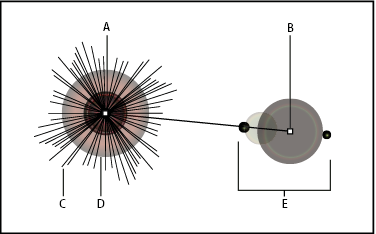

Create a flare
The Flare tool creates flare objects with a bright center, a halo, and rays and rings. Use this tool to create an effect similar to a lens flare in a photograph.
Flares include a center handle and an end handle. Use the handles to position the flare and its rings. The center handle is in the bright center of the flare—the flare path begins from this point.

- A.
- Center handle
- B.
- End handle
- C.
- Rays (shown black for clarity)
- D.
- Halo
- E.
- Rings
 Create a default flare
Create a default flare
- Press Alt (Windows) or Option (Mac OS), and
click where you want the center handle of the flare to appear.
 Flares often look best when drawn over
existing objects.
Flares often look best when drawn over
existing objects.
Draw a flare
Create a flare using the Flare Tool Options dialog box
- Select the Flare tool, and click where you want to place the center handle of the flare.
- In the Flare Tool Options dialog box, do any of the following
options, and click OK:
-
Specify the overall diameter, opacity, and brightness of the flare’s center.
-
Specify the Growth of the halo as a percentage of the overall size, and specify the fuzziness of the halo (0 is crisp and 100 is fuzzy).
-
If you want the flare to contain rays, select Rays and specify the number of rays, the longest ray (as a percentage of the average ray), and the fuzziness of the rays (0 is crisp and 100 is fuzzy).
-
If you want the flare to contain rings, select Rings and specify the distance of the path between the halo’s center point (center handle) and the center point of the furthest ring (end handle), the number of rings, the largest ring (as a percentage of the average ring), and the direction or angle of the rings.
-